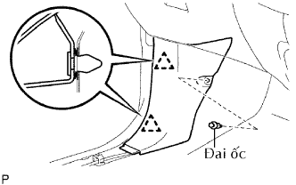
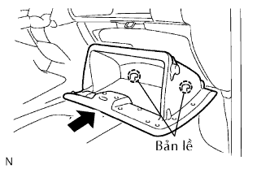
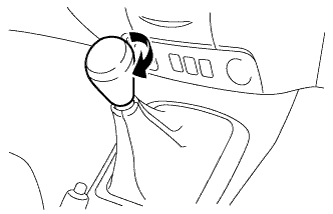
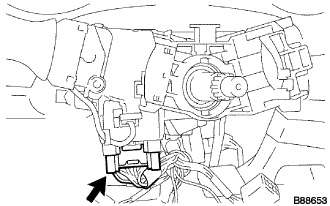
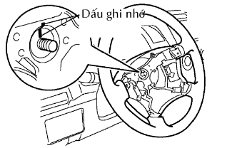

TẤM ỐP BẢNG TÁP LÔ BÊN DƯỚI > LẮP |
| 1. LẮP BẢNG TÁP LÔ PHÍA DƯỚI |
Lắp tấm ốp táp lô.
Lắp cần cáp điều khiển khoá nắp capô và cần cáp điều khiển nắp đổ nhiên liệu.
Nối các giắc nối và lắp các kẹp.
Lắp 3 vít.
Tháo 2 bu lông và 4 đai ốc.
Lắp 4 kẹp.

| 2. LẮP ỐP TRANG TRÍ VÁCH NGĂN BÊN TRÁI |
|  |
Cài khớp 2 kẹp để lắp tấm ốp cửa.
Lắp đai ốc.
| 3. LẮP ỐP TRANG TRÍ VÁCH NGĂN BÊN PHẢI |
| 4. LẮP TẤM ỐP BẬU CỬA TRƯỚC BÊN TRÁI |
 |
Cài khớp 3 kẹp và 7 vấu để lắp ốp bậu cửa.
| 5. LẮP TẤM ỐP BẬU CỬA TRƯỚC BÊN PHẢI |
| 6. LẮP ĐẾ LỖ CÔNG TẮC NO.1 |
 |
Nối tất cả các giắc nối.
Cài khớp 4 vấu để lắp đế bắt lỗ công tắc.
| 7. LẮP HỘP DẦM CÔNG XÔN |
 |
Lắp hộp dầm bằng 2 vít.
Lắp 4 vít và 2 bulông.
| 8. LẮP TẤM ỐP PHÍA TRÊN HỘP DẦM |
 |
Cài khớp 12 vấu để lắp tấm ốp dầm.
| 9. LẮP NẮP LỖ PHANH TAY |
 |
Cài khớp 4 vấu để lắp nắp lỗ.
| 10. LẮP CỤM CỬA KHOANG ĐỰNG GĂNG TAY |
|  |
Cài 2 bản lề để lắp cửa ngăn đựng găng tay.
 |
Trong khi ấn vào 2 bên của cửa ngắn đựng găng tay như được chỉ ra bới các mũi tên trong hình vẽ, đóng cửa để cài khớp nó vào 2 cái hãm.
| 11. LẮP NÚM CẦN CHUYỂN SỐ |
|  |
Vặn núm cần chuyển số theo chiều mũi tên để lắp nó.
| 12. LẮP TẤM ỐP BẢNG TÁP LÔ PHÍA DƯỚI |
Cài khớp 9 vấu để lắp tấm ốp.
| 13. LẮP CỤM CÔNG TẮC CHẾ ĐỘ ĐÈN PHA |
 |
Lắp công tắc chế độ đèn pha bằng vấu như trong hình Vẽ.
 |
Lắp công tắc sáng tối đèn pha bằng kẹp.
|  |
Lắp giắc nối.
| 14. LẮP CỤM CÔNG TẮC GẠT NƯỚC KÍNH CHẮN GIÓ |
 |
Gắn khóa cài để lắp công tắc gạt nước.
Nối các giắc nối.
| 15. LẮP CỤM VÔ LĂNG |
|  |
Gióng thẳng các dấu ghi nhớ trên vô lăng và trục lái chính.
Lắp đai ốc bắt vô lăng.
| 16. LẮP CỤM MẶT VÔ LĂNG |
 |
Đỡ mặt vôlăng bằng một tay như trong hình vẽ.
Nối giắc túi khí.
Nối giắc nối còi.
Lắp mặt vôlăng sau khi xác nhận rằng rãnh trên chu vi của vít mắc vào vỏ vít.
Dùng chìa hoa khế T30, lắp 2 vít.
| 17. LẮP TẤM ỐP PHÍA TRÊN BẢNG TÁP LÔ |
Lắp tấm ốp táp lô (Xem trang Kích chuột vào đây).
| 18. NỐI CÁP VÀO CỰC ÂM ẮC QUY |
| 19. TIẾN HÀNH THIẾT LẬP BAN ĐẦU |
Tiến hành thiết lập ban đầu (Xem trang Kích chuột vào đây).
| 20. KIỂM TRA ĐÈN CẢNH BÁO SRS |
Kiểm tra đèn cảnh báo SRS (Xem trang Kích chuột vào đây).